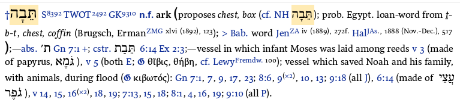

The BDB entry for tebah is the hub of the transmission chain. First published 1906, it embedded Brugsch's 1867 Egyptian loanword equation into the standard Hebrew lexicon. Every scholar citing "Egyptian loanword" after 1906 is citing BDB. What follows is the complete entry parsed element by element.
Entry Header
† — Dagger symbol: all occurrences of this word in the OT are listed in this entry. Nothing is omitted.
תֵּבָה — The Hebrew word. Pointed (vowelled) form: tēbâ.
S⁸³⁹² — Strong's concordance number 8392.
TWOT²⁴⁹² — Theological Wordbook of the Old Testament entry 2492.
GK⁹³¹⁰ — Goodrick-Kohlenberger number 9310. Cross-reference systems used by different Bible software.
TWOT²⁴⁹² — Theological Wordbook of the Old Testament entry 2492.
GK⁹³¹⁰ — Goodrick-Kohlenberger number 9310. Cross-reference systems used by different Bible software.
n.f. — Noun, feminine gender.
ark — BDB's primary English gloss. Their chosen translation.
Etymology
(proposes chest, box — BDB flags that the late Hebrew meaning (chest, box in Mishnaic/Rabbinic Hebrew) has been proposed as the meaning here. The parenthesis signals this is a proposal, not a settled definition.
cf. NH תֵּבָה — "compare New Hebrew (Mishnaic) תֵּבָה." In post-biblical Hebrew the same word meant chest or box. BDB notes this but does not assert it governs the biblical meaning.
prob. Egypt. loan-word from t-b-t, chest, coffin — "Probably an Egyptian loanword from Egyptian t-b-t meaning chest or coffin."
prob. = BDB's confidence qualifier. Moderately confident, not certain. The tradition that followed dropped this qualifier and hardened "probably" into fact.
Egypt. loan-word = borrowed from Egyptian.
t-b-t = the proposed Egyptian donor word. Note the consonants: Egyptian d-b-t in modern Egyptological notation. The equation rests on: t/d (arguable voiced/unvoiced pair), b/b (certain match), t/h (mismatch — Egyptian feminine t → Hebrew he is not a documented regular correspondence). One certain match, one arguable, one mismatch.
prob. = BDB's confidence qualifier. Moderately confident, not certain. The tradition that followed dropped this qualifier and hardened "probably" into fact.
Egypt. loan-word = borrowed from Egyptian.
t-b-t = the proposed Egyptian donor word. Note the consonants: Egyptian d-b-t in modern Egyptological notation. The equation rests on: t/d (arguable voiced/unvoiced pair), b/b (certain match), t/h (mismatch — Egyptian feminine t → Hebrew he is not a documented regular correspondence). One certain match, one arguable, one mismatch.
Brugsch, — Heinrich Brugsch, Hieroglyphisch-Demotisches Wörterbuch, I–VII (Leipzig, 1867–1882). First to propose the equation. One of the greatest Egyptologists of the 19th century — deciphered Demotic at age 16. His proposal was reasonable for 1867; comparative phonological rules had not yet been rigorously established.
ErmanZMG xlvi (1892), 123 — Adolf Erman, article in Zeitschrift der Deutschen Morgenländischen Gesellschaft (ZDMG), volume 46, 1892, page 123. Accepted Brugsch's equation. Note: Erman later co-authored the authoritative Wörterbuch der Ägyptischen Sprache (1926) — which does not include this equation. He accepted it in 1892 and quietly withdrew it by 1926. BDB (1906) was published in between.
> Bab. word JenZA iv (1889), 272f. — "Compare also Babylonian word" proposed by Jensen in Zeitschrift für Assyriologie, volume 4, 1889, pages 272 following. An alternative Babylonian etymology — noted but not adopted. The > symbol means "compare/see also," not "therefore" or "rejected."
HalJAs. 1888 (Nov.–Dec.), 517 — Halévy, Journal Asiatique, November–December 1888, page 517. Another 19th century scholar who discussed the etymology.
Note: Every etymological citation in the BDB entry is 19th century — Brugsch (1867–1882), Erman (1892), Jensen (1889), Halévy (1888). No 20th century scholarship is cited. Cohen (1972) — the only peer-reviewed study to evaluate these proposals and conclude the etymology is undetermined — is absent. Lambdin (1953) — whose specialist Egyptian loanword catalogue omits tebah entirely — is also absent.
Grammatical Forms
abs. 'ת Gn 7:1 + — Absolute state תֵּבָה (the word standing alone, unattached). First occurrence Genesis 7:1. The + signals many more references follow.
cstr. תֵּבַת 6:14 Ex 2:3 — Construct state תֵּבַת (the form used when attached to another noun, e.g. "ark of gopher wood"). Occurs in Genesis 6:14 and Exodus 2:3.
Usage — Moses' Basket
vessel in which infant Moses was laid among reeds v 3 — Gloss for Exodus 2:3. Straightforward description.
(made of papyrus, גֹּמֶא) — BDB notes the material: papyrus (gome', bulrush/papyrus reed). This is the contradiction BDB records but does not address: the entry has just proposed tebah is an Egyptian loanword meaning "chest or coffin" — and now notes the Moses vessel is made of papyrus. A papyrus chest/coffin. The contradiction sits unremarked.
v 5 — Also referenced in Exodus 2:5 (when the princess finds it).
(both E; — Both Exodus occurrences assigned to the E source (Elohist) of the Documentary Hypothesis. BDB applies JEDP source criticism throughout.
ⓖ θῖβις, θήβη — The circled ⓖ = LXX (Septuagint). The LXX translates Moses' tebah as thibis (θῖβις) or thebe (θήβη). BDB notes the LXX used a different word for Moses than for Noah — and makes no comment. The LXX split is documented and ignored.
cf. LewyFremdw. 100 — "Compare Lewy, Fremdwörter (Foreign Words in Hebrew), page 100." Lewy discussed the thibis/tebah connection.
Usage — Noah's Vessel
vessel which saved Noah and his family, with animals, during flood — Gloss for the Genesis occurrences. Functional description.
(ⓖ κιβωτός) — LXX uses kibotos (κιβωτός) for Noah's vessel. Noted without comment. BDB records that the LXX used kibotos for Noah and thibis for Moses — two different Greek words for the same Hebrew word — and draws no conclusion.
Gn 7:1, 7, 9, 17, 23; 8:6, 9(x2), 10, 13; 9:18 (all J), — All Genesis occurrences in chapters 7–9 assigned to the J source (Yahwist).
6:14 (made of עֲצֵי גֹפֶר), — Genesis 6:14 — "made of gopher wood." BDB notes the material without identifying it.
v 14, 15, 16(x2), 18, 19; 7:13, 15, 18; 8:1, 4, 16, 19; 9:10 (all P). — All remaining Genesis occurrences assigned to the P source (Priestly). BDB divides the flood narrative between J and P throughout — consistent with Documentary Hypothesis source criticism.
Summary — What BDB Actually Says
| Element | BDB's exact position | What the tradition made of it |
|---|---|---|
| Primary gloss | "ark" | Inherited unchanged |
| Alternative meaning | chest, box — noted as a proposal | Hardened to fact |
| Etymology | probably Egyptian loanword | "probably" dropped — stated as fact |
| Babylonian alternative | Noted, not adopted | Ignored |
| LXX split | Noted (thibis vs kibotos) — no comment | Ignored |
| Papyrus contradiction | Noted — no comment | Ignored |
| Cohen (1972) | Absent | — |
| Lambdin (1953) | Absent | — |
| Confidence level | "probable" — not certain | Certainty assumed |
| Source criticism | J and P sources throughout | Inherited with the entry |
The BDB entry is considerably more honest than its reputation. It qualifies the etymology as "probable," records the papyrus contradiction, and notes the LXX split. None of these signals were followed up. The tradition copied the conclusion and discarded the qualifications.
The transmission chain in one entry: Brugsch (1867) proposed the equation → Erman (1892) accepted it → BDB (1906) embedded it as "probable" → every subsequent lexicon and commentary copied it as fact → Cohen (1972) demolished it → nobody noticed. The entry you are reading is the hub of 120 years of uncritical copying.